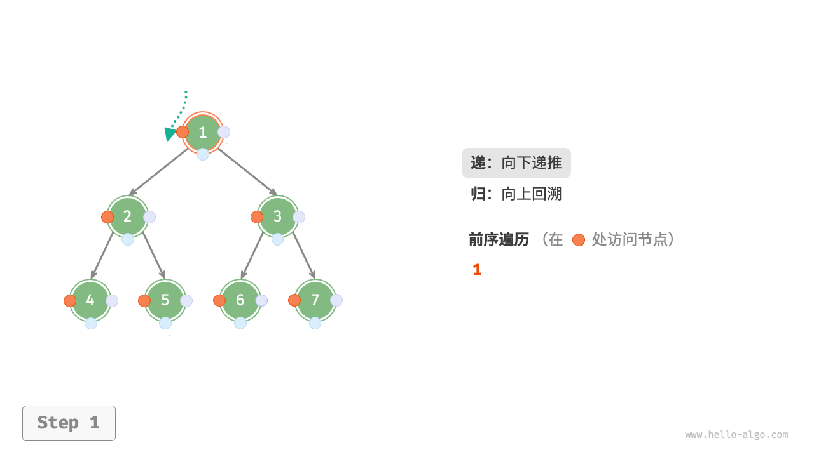

二叉树遍历
从物理结构的角度来看，树是一种基于链表的数据结构，因此其遍历方式是通过指针逐个访问节点。然而，树是一种非线性数据结构，这使得遍历树比遍历链表更加复杂，需要借助搜索算法来实现。
二叉树常见的遍历方式包括层序遍历、前序遍历、中序遍历和后序遍历等。
层序遍历
如下图所示，「层序遍历 level-order traversal」从顶部到底部逐层遍历二叉树，并在每一层按照从左到右的顺序访问节点。
层序遍历本质上属于「广度优先遍历 breadth-first traversal」，也称「广度优先搜索 breadth-first search, BFS」，它体现了一种“一圈一圈向外扩展”的逐层遍历方式。

代码实现
广度优先遍历通常借助“队列”来实现。队列遵循“先进先出”的规则，而广度优先遍历则遵循“逐层推进”的规则，两者背后的思想是一致的。实现代码如下：
"Python"
def level_order(root: TreeNode | None) -> list[int]: """层序遍历""" // 初始化队列，加入根节点 queue: deque[TreeNode] = deque() queue.append(root) // 初始化一个列表，用于保存遍历序列 res = [] while queue: node: TreeNode = queue.popleft() // 队列出队 res.append(node.val) // 保存节点值 if node.left is not None: queue.append(node.left) // 左子节点入队 if node.right is not None: queue.append(node.right) // 右子节点入队 return res"C++"
/* 层序遍历 */ vector<int> levelOrder(TreeNode *root) { // 初始化队列，加入根节点 queue<TreeNode *> queue; queue.push(root); // 初始化一个列表，用于保存遍历序列 vector<int> vec; while (!queue.empty()) { TreeNode *node = queue.front(); queue.pop(); // 队列出队 vec.push_back(node->val); // 保存节点值 if (node->left != nullptr) queue.push(node->left); // 左子节点入队 if (node->right != nullptr) queue.push(node->right); // 右子节点入队 } return vec; }"Java"
/* 层序遍历 */ List<Integer> levelOrder(TreeNode root) { // 初始化队列，加入根节点 Queue<TreeNode> queue = new LinkedList<>(); queue.add(root); // 初始化一个列表，用于保存遍历序列 List<Integer> list = new ArrayList<>(); while (!queue.isEmpty()) { TreeNode node = queue.poll(); // 队列出队 list.add(node.val); // 保存节点值 if (node.left != null) queue.offer(node.left); // 左子节点入队 if (node.right != null) queue.offer(node.right); // 右子节点入队 } return list; }
复杂度分析
- 时间复杂度为 $O(n)$ ：所有节点被访问一次，使用 $O(n)$ 时间，其中 $n$ 为节点数量。
- 空间复杂度为 $O(n)$ ：在最差情况下，即满二叉树时，遍历到最底层之前，队列中最多同时存在 $(n + 1) / 2$ 个节点，占用 $O(n)$ 空间。
前序、中序、后序遍历
相应地，前序、中序和后序遍历都属于「深度优先遍历 depth-first traversal」，也称「深度优先搜索 depth-first search, DFS」，它体现了一种“先走到尽头，再回溯继续”的遍历方式。
下图展示了对二叉树进行深度优先遍历的工作原理。深度优先遍历就像是绕着整棵二叉树的外围“走”一圈，在每个节点都会遇到三个位置，分别对应前序遍历、中序遍历和后序遍历。

代码实现
深度优先搜索通常基于递归实现：
- "Python"
```python
def pre_order(root: TreeNode | None):
"""前序遍历"""
if root is None:
// 访问优先级：根节点 -> 左子树 -> 右子树 res.append(root.val) pre_order(root=root.left) pre_order(root=root.right)return
def in_order(root: TreeNode | None): """中序遍历""" if root is None: return // 访问优先级：左子树 -> 根节点 -> 右子树 in_order(root=root.left) res.append(root.val) in_order(root=root.right)
def post_order(root: TreeNode | None): """后序遍历""" if root is None: return // 访问优先级：左子树 -> 右子树 -> 根节点 post_order(root=root.left) post_order(root=root.right) res.append(root.val)
- "C++"
```cpp
/* 前序遍历 */
void preOrder(TreeNode *root) {
if (root == nullptr)
return;
// 访问优先级：根节点 -> 左子树 -> 右子树
vec.push_back(root->val);
preOrder(root->left);
preOrder(root->right);
}
/* 中序遍历 */
void inOrder(TreeNode *root) {
if (root == nullptr)
return;
// 访问优先级：左子树 -> 根节点 -> 右子树
inOrder(root->left);
vec.push_back(root->val);
inOrder(root->right);
}
/* 后序遍历 */
void postOrder(TreeNode *root) {
if (root == nullptr)
return;
// 访问优先级：左子树 -> 右子树 -> 根节点
postOrder(root->left);
postOrder(root->right);
vec.push_back(root->val);
}
- "Java"
```java
/ 前序遍历 /
void preOrder(TreeNode root) {
if (root == null)
// 访问优先级：根节点 -> 左子树 -> 右子树 list.add(root.val); preOrder(root.left); preOrder(root.right); }return;
/ 中序遍历 / void inOrder(TreeNode root) { if (root == null) return; // 访问优先级：左子树 -> 根节点 -> 右子树 inOrder(root.left); list.add(root.val); inOrder(root.right); }
/ 后序遍历 / void postOrder(TreeNode root) { if (root == null) return; // 访问优先级：左子树 -> 右子树 -> 根节点 postOrder(root.left); postOrder(root.right); list.add(root.val); } ```
!!! tip
深度优先搜索也可以基于迭代实现，有兴趣的读者可以自行研究。
下图展示了前序遍历二叉树的递归过程，其可分为“递”和“归”两个逆向的部分。
- “递”表示开启新方法，程序在此过程中访问下一个节点。
“归”表示函数返回，代表当前节点已经访问完毕。
"<1>" 
"<2>"

"<3>"

"<4>"

"<5>"

"<6>"

"<7>"

"<8>"
"<9>"

"<10>"

"<11>"
复杂度分析
- 时间复杂度为 $O(n)$ ：所有节点被访问一次，使用 $O(n)$ 时间。
- 空间复杂度为 $O(n)$ ：在最差情况下，即树退化为链表时，递归深度达到 $n$ ，系统占用 $O(n)$ 栈帧空间。